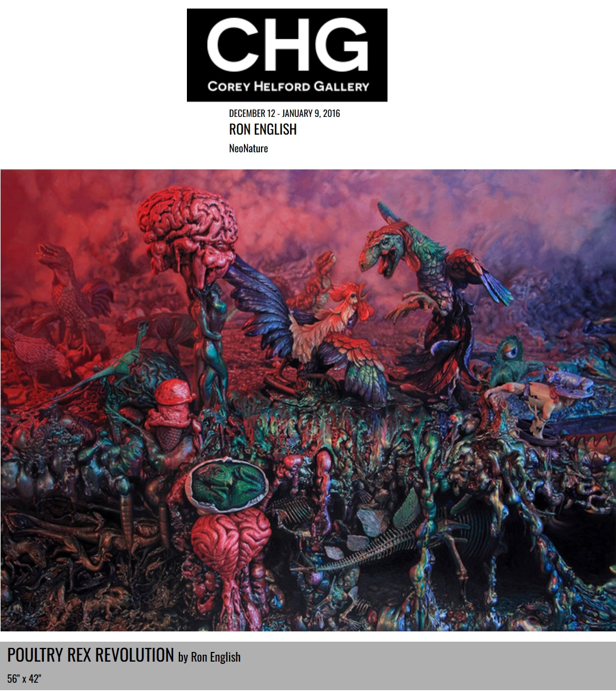

Exhibitions
Ron English NeoNature — We Are the New They, Corey Helford Gallery, Los Angeles, California, US, December 12, 2015–January 9, 2016.
Inaugural Exhibition, Allouche Gallery.
Living in Delusionville, Mesa Contemporary Arts Museum, Mesa Arts Center, Mesa, Arizona, US, September 9, 2022–January 22, 2023.
Ron English NeoNature — We Are the New They, Corey Helford Gallery, Los Angeles, California, US, December 12, 2015–January 9, 2016.
Inaugural Exhibition, Allouche Gallery.
Living in Delusionville, Mesa Contemporary Arts Museum, Mesa Arts Center, Mesa, Arizona, US, September 9, 2022–January 22, 2023.
Literature
Ron English, Fauxlosophy: The Art of Ron English (San Francisco: Last Gasp, 2016), p. 8. ISBN 978-0867196566.

Ron English, Original Grin: The Art of Ron English (Paris: Cernunnos, 2019), p. 366. ISBN 978-2374950938.

Corey Helford Gallery, “Ron English "Neo Nature" at the new Corey Helford Gallery”, Juxtapoz, 2015.

Notes
Ron English created and photographed a reference sculpture as a model for this work.
This work is documented on Corey Helford Gallery’s artwork page for Poultry Rex Revolution, under the exhibition Ron English NeoNature — We Are the New They.
This work also appears in Mesa Arts Center’s Flickr installation documentation for Living in Delusionville.
It appears at 2:36 in the video Ron English on His Newest Show “NeoNature: We Are the New They”.
An image of this work appears in Arrested Motion’s preview of the exhibition Juxtapozed.
Ancillary Documentation





Selected Online Circulation
Selected examples of the work’s online circulation, reproduction, or discussion. This list is not exhaustive; it is intended to document representative appearances of the image beyond formal exhibition and publication records.